Introduction to non-linear regression
Aug 22, 2024
A clarification
In the name normal (or Poisson, binomial, etc.) linear model, the word ‘linear’ refers to the response being modelled as a linear combination of covariates, i.e.
\[Y_i \sim N(\beta_1 + \beta_2X_{i2} + \dots + \beta_pX_{ip}, \sigma^2)\]
It does not refer to each covariate-response relationship being linear. Therefore the following is also within the class of normal linear models
\[Y_i \sim N(\beta_1 + \beta_2X_{i} + \beta_3X_{i}^2, \sigma^2)\]
Here, the relationship between Y and x is quadratic, but it is still a linear model.
So how do you tell if the relationship is linear?
Plot each covariate against the response and see what shape the relationship is.
Make sure you plot it with the transformation used in the model.
If linear, fit a linear model, if not start thinking of the shape of the relationship.
Fit as simple a model as possible, do not overcomplicate it unnecessarily. (Occam’s razor)
Example
Associations are not solely linear
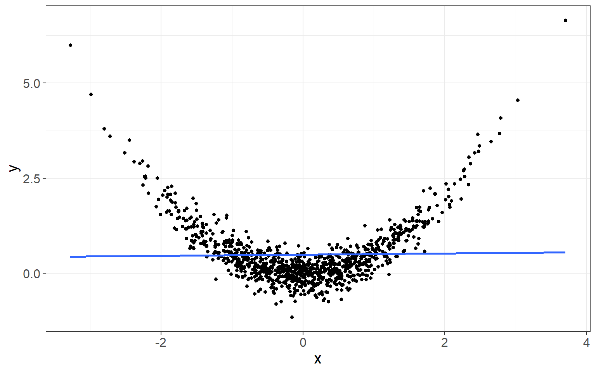Ways to model non-linearity
Transform the continuous exposure to categorical variable and model the categories.
Basis functions (e.g., polynomial, Fourier)
Natural splines
Gaussian priors (e.g., random walks, kernels)
Categorical transformation
Let’s first consider quintiles
What’s the problem with this fit?
Categorical transformation
More categories…
What’s the problem with this fit?
Basis Expansions
We need to define a set of flexible functions that could capture relationships that are not linear. In general, we can write:
\[Y _i = \sum_j^K\beta_j \phi_j(X_j) + \epsilon_i\]
which we can write: \(f(X) = \beta^T\Phi(X)\) and we say that \(\Phi(X)\) is a basis system for \(f\).
The polynomial basis function
\[\Phi(X) = (1) \text{ ,thus } Y _i = \beta_0 + \epsilon_i\]
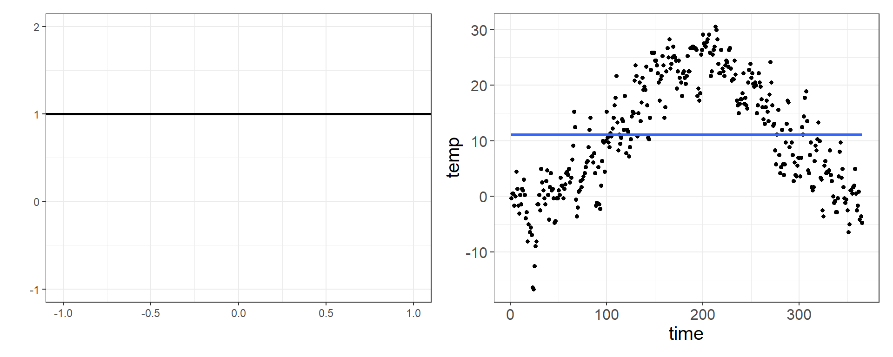The polynomial basis function
\[\Phi(X) = (1 X) \text{ ,thus } Y _i = \beta_0 + \beta_1 X_1 + \epsilon_i\]
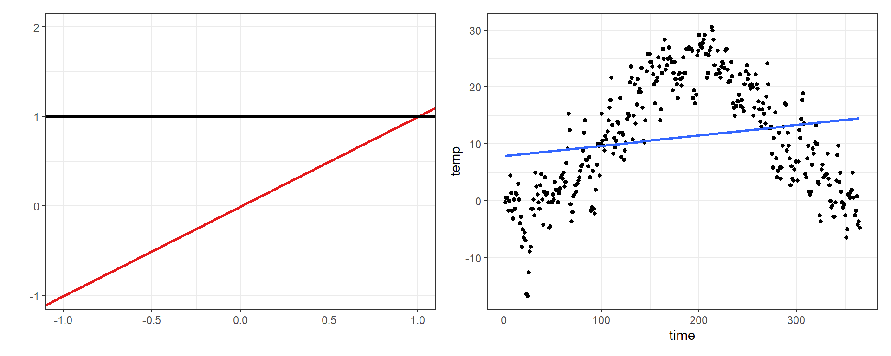The polynomial basis function
\[\Phi(X) = (1 \; X \; X^2) \text{ ,thus } Y _i = \beta_0 + \beta_1 X + \beta_2 X^2 + \epsilon_i\]
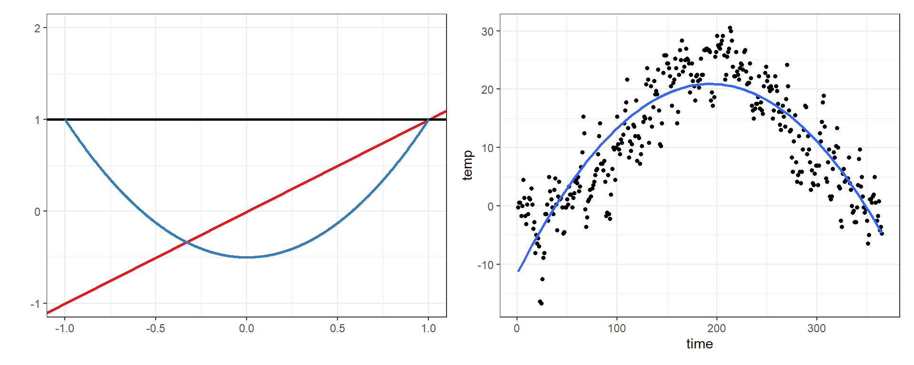The polynomial basis function
\[\Phi(X) = (1 \; X \; X^2 \; X^3) \text{ ,thus } Y _i = \beta_0 + \beta_1 X + \beta_2 X^2 + \beta_3 X^3 + \epsilon_i\]
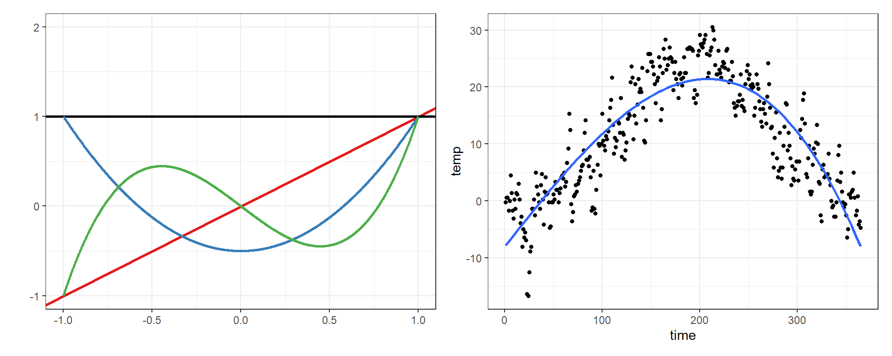The polynomial basis function
\[\Phi(X) = (1 \; X \; X^2 \; X^3 \; X^4) \text{ ,thus}\]
\[Y _i = \beta_0 + \beta_1 X + \beta_2 X^2 + \beta_3 X^3 + \beta_4 X^4 + \epsilon_i\]
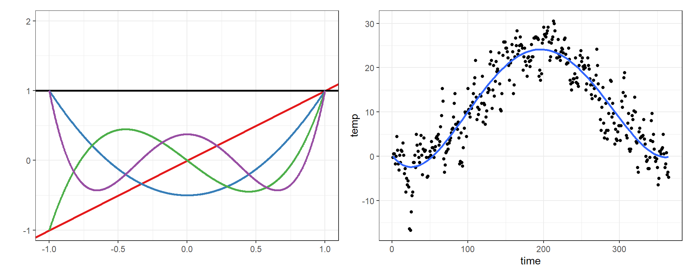The polynomial basis function
\[\Phi(X) = (1 \; X \; X^2 \; X^3 \; X^4 \; X^5) \text{ ,thus }\]
\[Y _i = \beta_0 + \beta_1 X + \beta_2 X^2 + \beta_3 X^3 + \beta_4 X^4 +\beta_5 X^5 + \epsilon_i \]
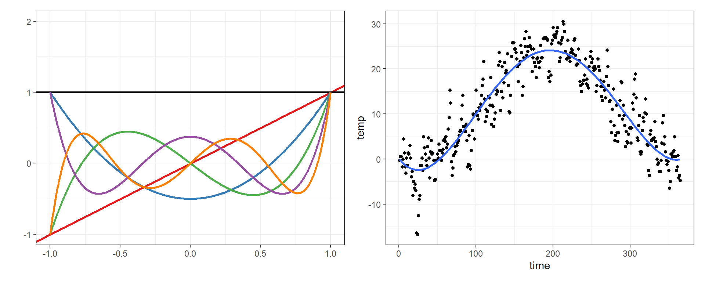Pros and cons
Pros
These curves are quite flexible—a quadratic can fit most biologically plausible curves
The curves only use 1(quadratic) or 2(cubic) degrees of freedom more than linear, unlike dummy variable models
The results are not sensitive to choice of boundaries (there aren’t any)
Outliers mostly influence the extremes of the curve, not the center part
Cons
They use more degrees of freedom than linear, and therefore have less power
There is still some sensitivity to influential observations
Other types of basis function
Harmonics - The Fourier basis function
\[1, sin(\omega X), cos(\omega X), sin(2\omega X), cos(2\omega X), \dots, \]
\[sin(m \omega X), cos(m \omega X)\]
constant \(\omega\) defines the period of oscillation of the first sine/cosine pair. This is \(\omega = 2\pi/P\) where \(P\) is the period.
Example: Fourier basis function
\[\Phi(X) = (1 \; sin(\omega X) \; cos(\omega X) \; sin(2\omega X) \; cos(2\omega X)) \text{ ,thus }\]
\[Y _i = \beta_0 + \beta_1 sin(\omega X) + \beta_2 cos(\omega X) + \beta_3 sin(2 \omega X) + \beta_4 cos(2\omega X) + \epsilon_i\]
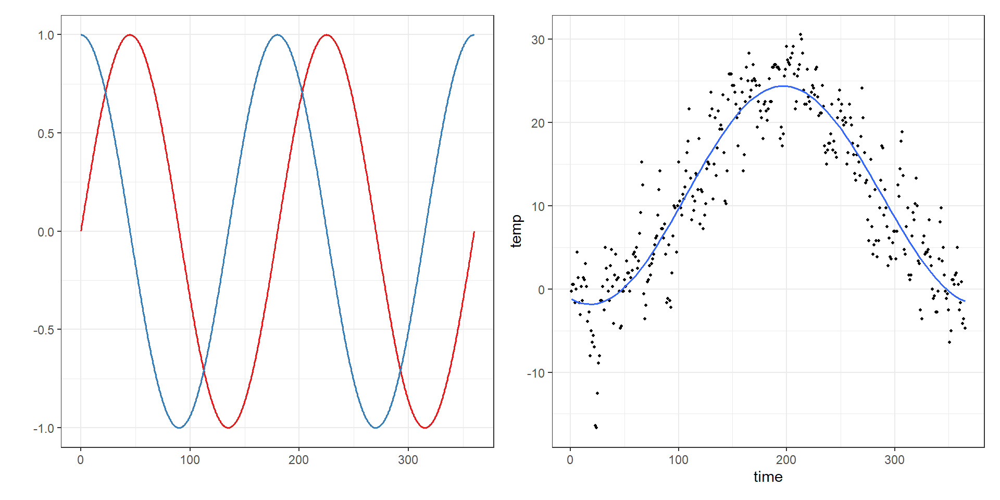Pros and cons
Pros
Excellent computational properties, especially if the observations are equally spaced.
Natural for describing periodic data, such as the annual weather cycle
The results are not sensitive to choice of boundaries (there aren’t any)
Cons
- functions are periodic; this can be a problem if the data are, for example, growth curves.
Parametric non-linear effects
The following models captured the non-linear relationships using simple non-linear functions.
These types of models are to be preferred if possible, because again they are simpler to make inference from, e.g. the relationship is quadratic.
However, there may be times when the relationship being modelled does not look like a parametric function. Then what should you do?
Parametric non-linear effects
Consider the following form
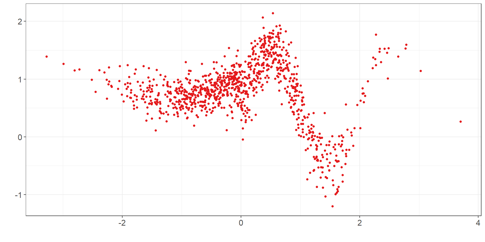It doesn’t look like any simple parametric form (e.g. polynomial, sinusoidal, etc), so what do you do?
Smooth functions
There are many methods to estimate non-linear relationships such as that on the previous slide.
They are generically called smooth functions, and include splines (lots of different types), kernel smoothers and local linear smoothers.
We will focus on splines in this lab, because they are simple to understand graphically and are easy to fit to the data.
Splines
Splines were originally thin splints of wood used to trace complex, smooth curves in engineering and architectural.
Splines were pinned to the drawing at points where the spline changed its curvature.
Piecewise Linear Splines
- We begin fitting splines by dividing the range of exposure into pieces.
- Instead of fitting a constant in each piece, we fit a separate linear term in each piece.
- This has more power since it allows variation within categories to predict variation in outcome.
- We can use fewer categories to capture the deviation from a strictly linear curve because we have slopes within category.
Linear splines
Linear threshold model
\[\begin{align} Y_i &= \beta_0^{(1)} + \beta_1^{(1)}x + \epsilon_i \qquad x\leq-1\\ Y_i &= \beta_0^{(2)} + \beta_1^{(2)}x + \epsilon_i \qquad -1<x\leq0.5\\ Y_i &= \beta_0^{(3)} + \beta_1^{(3)}x + \epsilon_i \qquad 0.5<x\leq1.5\\ Y_i &= \beta_0^{(4)} + \beta_1^{(4)}x + \epsilon_i \qquad 1.5<x\leq3\\ Y_i &= \beta_0^{(5)} + \beta_1^{(5)}x + \epsilon_i \qquad x\geq3\\ \end{align}\]Linear spline model
\(Y_i = \beta_0 + \beta_1x + \beta_2(x+1)_+ + \beta_3(x-0.5)_+ + \beta_4 (x-1.5)_+ + \beta_5(x-3)_+ + \epsilon_i\)
\[(x-k)_+=\begin{cases} 0, \quad x<k \\ x-k, \quad x\geq k\\\end{cases}\]
Linear splines in R
- You can use the
bs()function in R to define the basis function:bs(x, degree = 3, knots = c(-1, 0.5, 1.5, 3))and plot the result:
Cubic splines
Similarly we can define higher order polynomial splines, for instance:
\[\begin{align} Y_i = \beta_0 &+ \beta_1 x + \beta_2 x^2 + \beta_3 x^3 + \\ & \beta_4 (X+1)_+ + \beta_5 (X+1)_+^2 + \beta_6(X+1)_+^3 + \\ & \beta_7 (x-0.5)_+ + \beta_8 (x-0.5)_+^2 + \beta_9 (x-0.5)_+^3 + \\ &\dots + \epsilon_i \\ (x-k)_+ & = \begin{cases} 0, \quad x<k \\ x-k, \quad x\geq k \end{cases} \end{align}\]which reduces to the following to ensure smooth curvature on the knots (it can be seen after deriving the first and second derivative):
\[\begin{align} Y_i = \beta_0 & + \beta_1 x +\beta_2 x^2 + \beta_3 x_3 + \\ &\beta_6 (x+1)_+^3 + \beta_9(x-0.5)_+^3 + \dots + \epsilon_i \end{align}\]Cubic splines
- Similar as before:
bs(x, degree = 3, knots = c(-1, 0.5, 1.5, 3)):
without the splines package:
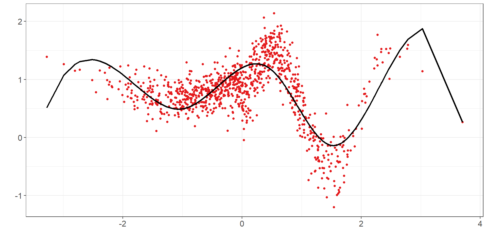Splines
A spline of order n is a piecewise polynomial function of degree \(n-1\) in a variable \(x\).
(Basis) Splines can be:
Piecewise constant.
Linear.
Quadratic.
Cubic.
higher order polynomials.
etc.
Why are the borders so wiggly?
Natural cubic splines
Splines can have high variance in the boundaries.
This problem aggravates if knots too few.
The natural spline constraints the fit to be linear before and after the first and last knots.
This stabilises the fitting and makes a more reasonable assumption.
Natural cubic splines in R
- To define natural cubic splines in R:
ns(x, knots = c(-1, 0.5, 1.5, 3)):
Well, better fit be achieved with more knots
ns(x, df = 10)
… and more
… and more
… and more
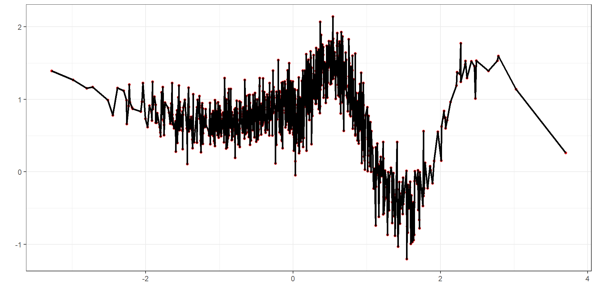is this a useful model?
Gaussian priors
- We will focus on random walks of order 2, which is the Bayesian analogue of (penalized) splines. Recall:
\[\Delta^2x_i = x_i - 2x_{i+1} + x_{i+2} \sim N(0, \tau^{-1})\]
This is very similar with the categorical transformation example, but written in a more concise manner (this model is not overparametrised).
The penalty is given through the prior of the precision parameter. The prior controls smoothness: the strongest it is the smoother the result. (given the data)
Random walk of order 2 (strong prior)
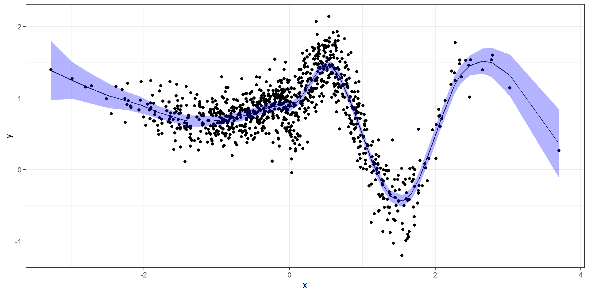Random walk of order 2 (vague prior)
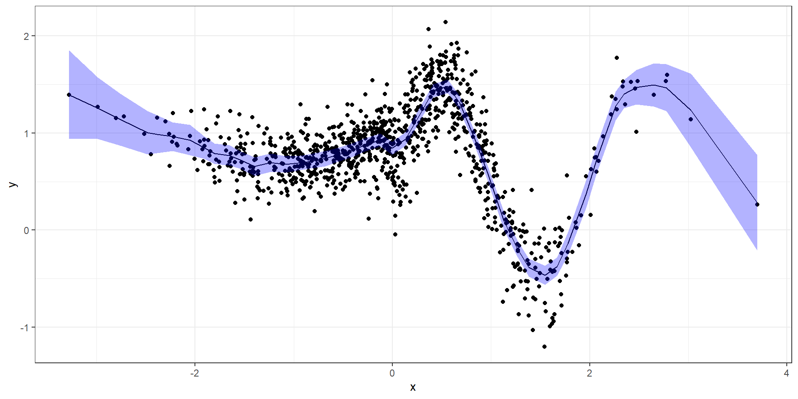Example: Mortality and temperature in Italy
1,946,755 summer deaths during 2011-2018 in Italy
Data is available at 107 administrative units
Temperature is available from ERA-5 at 9km resolution
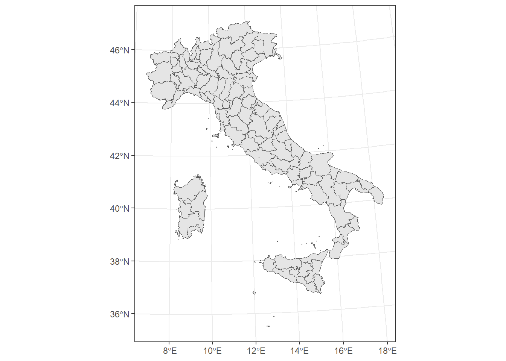
Example
- Fit a linear, a categorical and a random walk model for capturing the effect of temperature.
Extensions
It is straight forward to include confounders in the linear predictor.
Confounders can be included as linear or more flexible terms.
We can account for spatiotemporal correlations.
We can incorporate the delayed effect of temperature on health (lags)
joint lag models
distributed non-linear lag models
Summary
Introduction to non-linear exposure models
Theory and application of linear splines
Understand more flexible non-parametric functions (focus on splines)
Random walk of order 2 to model non-linearity
Questions?